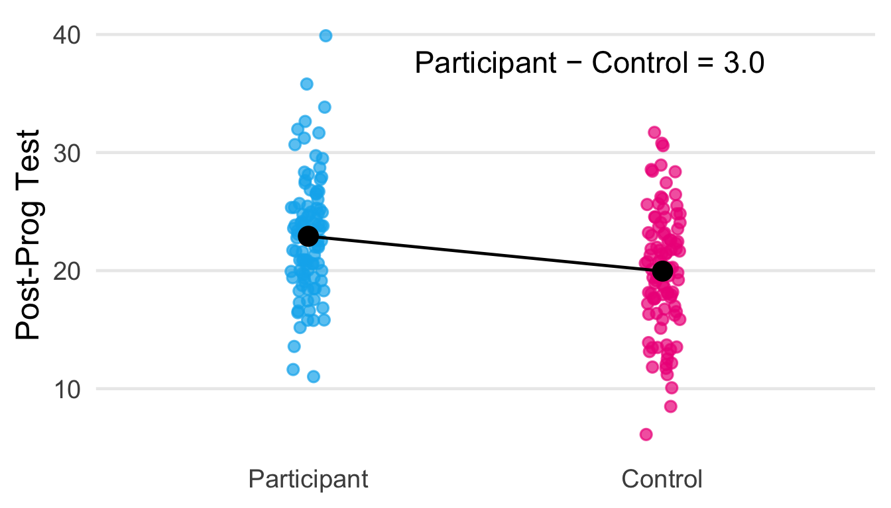
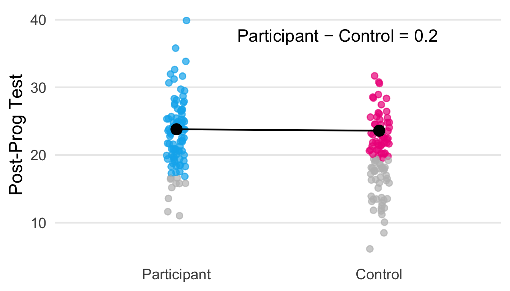
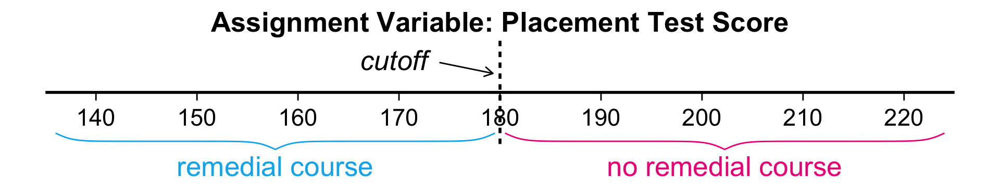
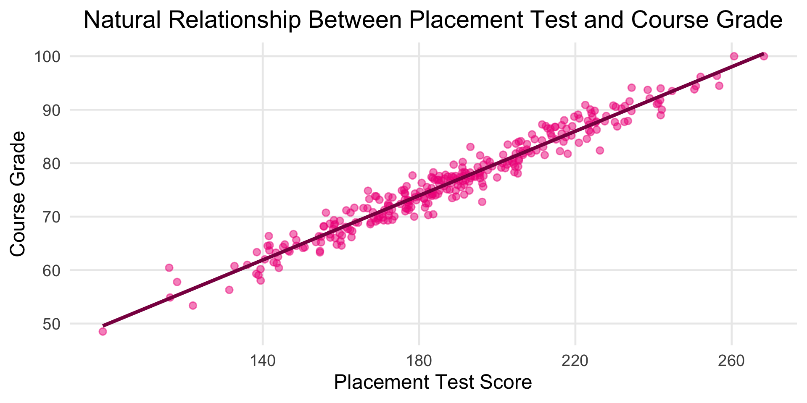
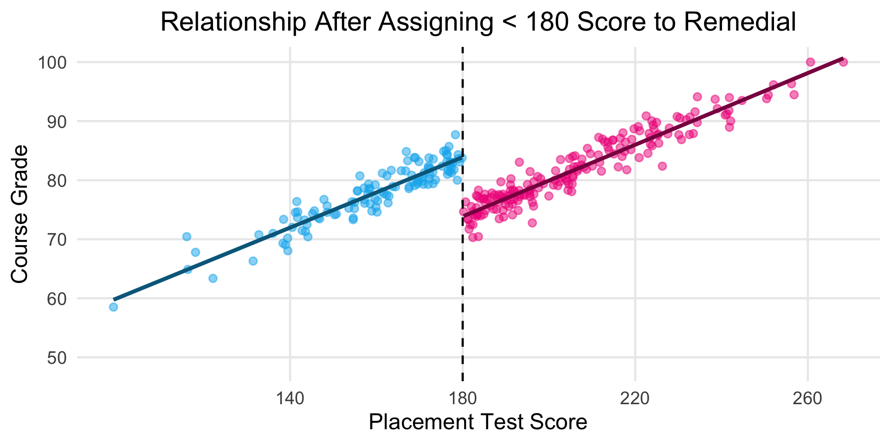
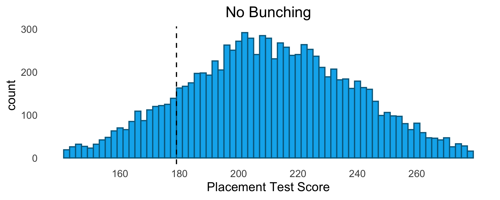
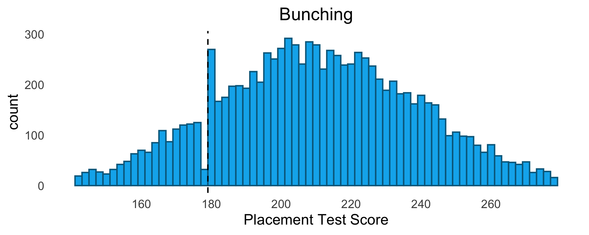
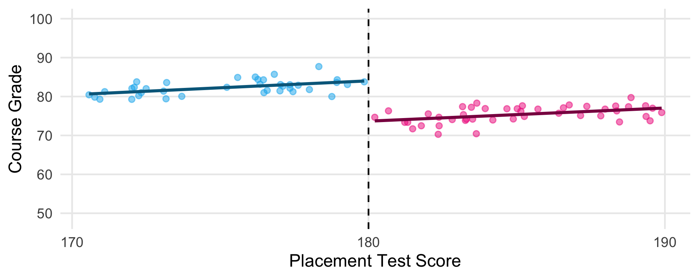
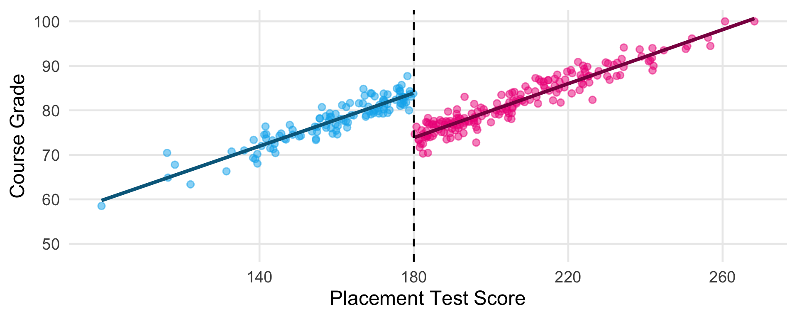

Impact Evaluation: Controlled Comparison Strategies
Week 8
REF 770: Program Evaluation
Recap from Last Two Classes
- We’ve been observing people out in the world, in their natural state
- We want to know effects of programs for people who chose to participate
- We use people who did not participate as comparison group, to estimate participants’ counterfactuals
- But factors that cause participation & also affect outcomes create selection bias
- Covariate-based strategies of regression adjustment & matching help reduce selection bias
- But will not eliminate it unless there are no unmeasured confounders
- Impossible to know
- DiD limits the type of unmeasured confounders that can cause selection bias
- And gives us a way to check the likelihood that these are present & giving us serious problems
- …but still can’t guarantee that we’ve eliminated them
Randomized
Controlled Trials
Random Assignment
Eliminates Selection Bias
- Randomized controlled trials: design defined by the use of random assignment
- Randomly choose from a group of people who will participate in the program
- Those not randomly selected become the comparison group
- “Control” group1
- Random assignment can guarantee the elimination of selection bias
- Making RCTs the strongest / most internally valid design
How Does Random Assignment
Eliminate Selection Bias?
| Variable | Participant | Comparison |
|---|---|---|
| Motivation | 3 | 1 |
| Y(0) | 5 | 7 |
| Variable | Participant | Comparison |
|---|---|---|
| Motivation | 2 | 2 |
| Y(0) | 6 | 6 |
| Variable | Participant | Comparison |
|---|---|---|
| Motivation | 3 | 1 |
| Base Depress | 10 | 14 |
| Y(0) | 4 | 8 |
| Variable | Participant | Comparison |
|---|---|---|
| Motivation | 2 | 2 |
| Base Depress | 12 | 12 |
| Y(0) | 6 | 6 |
| Variable | Participant | Comparison |
|---|---|---|
| Motivation | 3 | 1 |
| Base Depress | 10 | 14 |
| Y(0) | 3 | 9 |
| Variable | Participant | Comparison |
|---|---|---|
| Motivation | 2 | 2 |
| Base Depress | 12 | 12 |
| Y(0) | 6 | 6 |
Random Assignment in Action
ra_natural = transpose(ra_data).map(d => d.participate)
// blur so the arrow keys / space keep moving the slides after a click
ra_blur = () => document.activeElement?.blur()
// Randomize shuffles who participates (still 250 per group); Reset puts
// back the original assignment
viewof ra_assign = Inputs.button([
["randomize", () => { ra_blur(); return d3.shuffle(ra_natural.slice()) }],
["reset to natural", () => { ra_blur(); return ra_natural }]
], {value: ra_natural})ra_current = transpose(ra_data).map((d, i) => ({
...d,
participate: ra_assign[i],
group: ra_assign[i] === 1 ? "participant" : "comparison"
}))
ra_vars = Object.keys(ra_data).filter(v => !["participate", "group"].includes(v))ra_mean = (v, p) => d3.mean(ra_current.filter(d => d.participate === p), d => d[v])
// how each variable's mean is shown (the 0/1 variables as percentages)
ra_fmt = {
const pct = v => `${Math.round(v * 100)}%`
return {
test_score: v => v.toFixed(0),
income: v => `$${v.toFixed(0)}k`,
age: v => v.toFixed(1),
prek: pct,
red: pct,
blue: pct,
y0: v => v.toFixed(0)
}
}
// name shown for each variable
ra_labels = ({
test_score: "Base Test Score",
income: "Fam Income",
age: "Age",
prek: "Did Pre-K",
red: "Red",
blue: "Blue",
y0: "Y(0)"
})
// the y0 row is bold italic (styles in style_8.css)
html`<div class="ra-means"><table>
<thead><tr><th>Variable</th><th>Participant</th><th>Comparison</th></tr></thead>
<tbody>${ra_vars.map(v => html`<tr class=${v === "y0" ? "ra-y0" : null}>
<td>${ra_labels[v]}</td><td>${ra_fmt[v](ra_mean(v, 1))}</td><td>${ra_fmt[v](ra_mean(v, 0))}</td>
</tr>`)}</tbody>
</table></div>`ra_full_cols = Object.keys(ra_data).filter(v => v !== "participate")
// built once each time it's opened; ra_full.update() then rewrites the
// cells in place when the data changes, rather than redrawing the table
// (which flickers and loses the scroll position)
ra_full = {
if (!ra_show_full) return html``
const fmt = x => typeof x === "number" && !Number.isInteger(x) ? x.toFixed(1) : x
const rows = transpose(ra_data).map(() => ra_full_cols.map(() => html`<td></td>`))
const el = html`<div class="ra-full"><table>
<thead><tr>${ra_full_cols.map(v => html`<th>${v}</th>`)}</tr></thead>
<tbody>${rows.map(cells => html`<tr>${cells}</tr>`)}</tbody>
</table></div>`
el.update = data => data.forEach((d, i) => ra_full_cols.forEach((v, j) => {
rows[i][j].textContent = fmt(d[v])
}))
return el
}// one person icon per row of the data, colored by red / blue, in a block
// per group 15 across (the biggest icons that fill the slide's height:
// 17 rows, the last one partial). built once; ra_people.update() moves
// them afterwards so the moves animate (styles in style_8.css)
ra_people = {
const people = transpose(ra_data)
const wrap = html`<div class="ra-people">
<div class="ra-head" style="left: 0%">Participant</div>
<div class="ra-head" style="left: 54%">Comparison</div>
</div>`
const icons = people.map(d => {
const el = html`<div class="ra-person">${svg`<svg viewBox="0 0 20 40" fill=${d.red === 1 ? "#EE1289" : "#00B2EE"}>
<circle cx="10" cy="6" r="5.5"/>
<path d="M5 13h10a3 3 0 0 1 3 3v11h-3.5v12h-3.5v-11h-2v11h-3.5v-12h-3.5v-11a3 3 0 0 1 3-3z"/>
</svg>`}</div>`
wrap.append(el)
return el
})
// each person's spot: their group (p) and position within its block
const count = {1: 0, 0: 0}
const natural = people.map(d => ({p: d.participate, pos: count[d.participate]++}))
let spots = natural.map(s => ({...s}))
const place = (el, s) => {
el.style.left = `${(s.p === 1 ? 0 : 54) + (s.pos % 15) * (46 / 15)}%`
el.style.top = `${45 + Math.floor(s.pos / 15) * 33}px`
}
// reset puts everyone back in their original spot. otherwise each group
// fills reds from the top and blues below them. people who stay in their
// group keep their spot if it's still in their color's zone, and
// everyone else (switchers, plus stayers whose zone moved) takes the
// first free spot in their zone, so as few people move as possible
wrap.update = assign => {
if (assign === ra_natural) {
spots = natural.map(s => ({...s}))
} else {
for (const g of [1, 0]) {
const members = people.map((d, i) => i).filter(i => assign[i] === g)
const nRed = members.filter(i => people[i].red === 1).length
const zone = i => people[i].red === 1 ? [0, nRed] : [nRed, members.length]
const inZone = (i, pos) => pos >= zone(i)[0] && pos < zone(i)[1]
const taken = new Set()
const stay = members.filter(i => spots[i].p === g && inZone(i, spots[i].pos))
stay.forEach(i => taken.add(spots[i].pos))
members.filter(i => !stay.includes(i)).forEach(i => {
let pos = zone(i)[0]
while (taken.has(pos)) pos++
taken.add(pos)
spots[i] = {p: g, pos}
})
}
}
spots.forEach((s, i) => place(icons[i], s))
}
spots.forEach((s, i) => place(icons[i], s))
return wrap
}RCT: Difference in Mean Outcomes =
Unbiased Prog Effect Estimate
- After random assignment:
- Participant Avg Baseline Vars \(\approx\) Comparison Avg Baseline Vars
- Participant Avg \(Y(0) \approx\) Comparison Avg \(Y(0)\)
- Prog Effect \(\approx\) Participant Avg \(Y -\) Comparison Avg \(Y\)
🌟🥇🏆 “Gold standard” design 🏆🥇🌟
- Useful to combine with covariate adjustment to help reduce noise from chance baseline imbalance
- Especially using a baseline measure of the outcome
RCT Validity Threat 1: Attrition
- Inevitably, people will attrit: drop out of the study or be unreachable at follow-up
- Their data is missing
- Differential attrition: when groups have different attrition rates, this can create selection bias


RCT Validity Threat 2: Consent
- Finding people who consent to being in RCTs is a big challenge
- Consent rates frequently well below 50%
- Mostly an external validity issue: can only learn about effects for population of people willing to consent
- But if randomization is done prior to consent, this creates potential for differential consent
- This can create selection bias in the same way as differential attrition
- “Waitlist control” designs may face this (ask me how I know…😓)
Intent-to-Treat vs.
Treatment-on-the-Treated
- Some people assigned to a program don’t do it
- And some who are not assigned will do it anyway
- Intent-to-treat (ITT): effect of being assigned to a program
- Treatment-on-the-treated (TOT): effect of actually doing the program2
- ITT is the straightforward estimate:
\(ITT =Y_{\textit{assigned to particiate}} - Y_{\textit{assigned to control}}\)
- But all effects come from just the subset who actually participate (and wouldn’t have if assigned to control)
- So the effect of participation must be larger than ITT
\(TOT = \frac{ITT}{\textit{% induced to participate}}\) see appendix for details
Unit of Assignment
- Individual assignment: assign individual people (or whatever your unit of analysis) to program or control
- Cluster assignment: assign entire clusters of people/units to program or control
- Example: entire schools of students are assigned to either participate or not
- Cluster-randomized typically requires a large number of clusters (eg schools) to participate in study for adequate statistical power
Treatment Contrast
- Treatment contrast: difference between what the control group gets and what the program group gets
- Counterfactual condition: the services/conditions for the control group
- “Business as usual”: most common counterfactual condition, where control group gets whatever services they would typically get
- These “business as usual” conditions can vary from place-to-place or over time
- This variation can have big implications on the estimated program effects
- Example: effect of Head Start
- If most children in the community can already access free high-quality pre-k, the effect may be small
- But if most children are unable to access pre-k, the effect may be large
- Many different types of treatment contrasts can be set up; each answers a different evaluation question
Regression Discontinuity
Example for RD Intuition
- Students must all take a placement test; if they score below 180, they must take a remedial course
- We want to know the effect of the remedial course on main course performance
- We can use a regression discontinuity (RD) design:
- Participant group: students who scored 179
- Control group: students who scored 180
- These students are basically the same, with just 1 point difference
- So any difference in course performance we observe should be due to the remedial course rather than confounders
RD Takes Advantage of
“Assignment Variables”
- Assignment variable:3 variable that assigns people to program
- Cutoff:4 the point on the assignment variable where…
- People with values below are assigned to one group (eg program)
- People with values above are assigned to the other group (eg control)

- Assignment to program is “as good as random” if we know people’s assignment variable value
RD Effect = Size of “Discontinuity”
- Program assignment based on cutoff score creates “discontinuity” in the relationship between assignment variable & outcome
- RD effect estimate = size of the discontinuity = diff btwn those just below & above cutoff


RD Effects Are “Local” to
People At the Cutoff
- RD estimates effects only for people just below & above the cutoff
- Local average treatment effect (LATE): the effect is “local” to people with these assignment variable scores
- Effects may be different for people with different values on the assignment variable
- For instance, in our example:
\[ Prog \: Effect_{RD} = Y_{place \: test = 179} - Y_{place \: test = 180} \]
- But people who scored eg 160 on the placement test may have benefitted less (or more) from the remedial course
- RD cannot tell us about the effects for people who scored far from the cutoff on the placement test
Biggest Threat to Validity:
Manipulation at the Cutoff
- Someone may know about the cutoff and intentionally try to score higher or lower to get into (or out of) the program
- Introduces selection bias, as people are now “choosing” whether to do the program, rather than their score “assigning” them
- Check for bunching to see if this might be happening
Bunching Check
- Look at a histogram, which shows the number of people at each assignment variable value
- Many more scores just to one side of the cutoff than the other = evidence of manipulation


Covariate Discontinuities =
Possible Selection Bias
- If there are discontinuities in covariates at the cutoff, the groups are imbalanced
- These covariates will create selection bias if they affect outcome
- Check for this by:
- Plotting the relationships between the assignment variable & baseline covariates
- Estimating the “effect” of the assignment var on the covariate, as if it was the outcome; large estimates are sign of trouble
RD Estimation Requires Modeling
Relationship Btwn Assign Var & Outcome
- Conceptually, RD is difference between those just below and above the cutoff
- But we typically don’t have enough observations just below & above
- So we estimate the relationship between assign var & outcome on both sides of cutoff
- RD effect estimate = gap between the relationship lines at the cutoff

Bandwidth:
How Far From the Cutoff Do We Go?
- The further we get from cutoff, the more different people become
- And thus the more we rely on statistical estimation to get relationship for people near cutoff
- So we limit our sample to those within a certain distance from cutoff, aka bandwidth


The Smaller the Bandwidth, the
Smaller the Sample…
- …and therefore the less statistical power we have
- So there’s always a tradeoff with bandwidth: internal validity vs. precision


Comparing Strategies
Non-Randomized vs. Controlled &
External vs. Internal Validity
- Non-randomized strategies (covariate-based, DiD) observe the world as it naturally occurs
- Therefore, they often have higher external validity
- But they can’t control who accesses program, so have lower internal validity
- Controlled strategies (RCT, RD) assign people to program & comparison groups
- They have higher internal validity due to this control
- But RCTs are unnatural scenarios, so they may have lower external validity
- And RD only estimates effects for those near cutoff, so they also may have lower external validity
Appendix
“Scale Up” the ITT Estimate to
Get TOT
- All effects must come from those assigned to participate who
- Actually participated
- Wouldn’t have participated if assigned to control
- Otherwise, potential outcomes are the same regardless of assignment
- So the difference in outcomes should be averaged across just this subset of people, rather than the whole participant group
| assignment | participated |
|---|---|
| participate | 70% |
| control | 20% |
% “treated” \(= 70\% - 20\% = 50\%\)
TOT \(= \frac{ITT}{0.50}\)
So if ITT is, for example, 10:
TOT \(= \frac{10}{0.50} = 20\)
Footnotes
In practice, comparison groups are usually referred to as the “control” group, even in quasi-experimental designs like DiD
Another name for TOT is complier average causal effect (CACE). I like CACE better but it’s more technical so we’ll stick with TOT for class.
Also called “running” or “forcing” variable
Also called “cut point”, “cut score”, or “threshold”